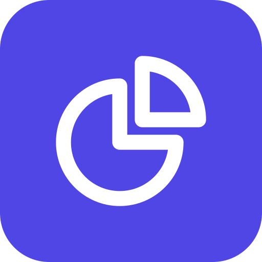

Трекер осознанных финансов
Учёт расходов с оценкой осознанности — без регистрации, всё хранится локально в вашем браузере.
- Оценка трат Каждый расход помечается как осознанная, ок или плохая. Графики и фильтры показывают, на что уходят деньги и какие из этих трат вы потом одобряете.
- Всё на вашем устройстве Данные не покидают браузер: никаких серверов, аккаунтов и регистраций. Это даёт мгновенный отклик и полную приватность — ваши траты видите только вы.
- Работает офлайн После первой загрузки приложение полностью кэшируется. Можно записывать траты в самолёте, в метро или при отключённой сети.
- Импорт и экспорт В любой момент можно выгрузить все транзакции в JSON для бэкапа или переноса между устройствами.
Как это выглядит
Установить на iPhone или iPad
Чтобы пользоваться трекером как обычным приложением — с иконкой на экране Домой, без адресной строки и полностью офлайн:
- 1 Откройте сайт в Safari. Другие браузеры на iOS пока не позволяют добавить веб-приложение.
- 2 Нажмите кнопку «Поделиться» в нижней панели Safari (квадрат со стрелкой вверх).
- 3 Прокрутите меню вниз и выберите «На экран Домой» (Add to Home Screen).
- 4 Нажмите «Добавить» в правом верхнем углу — иконка появится на главном экране.